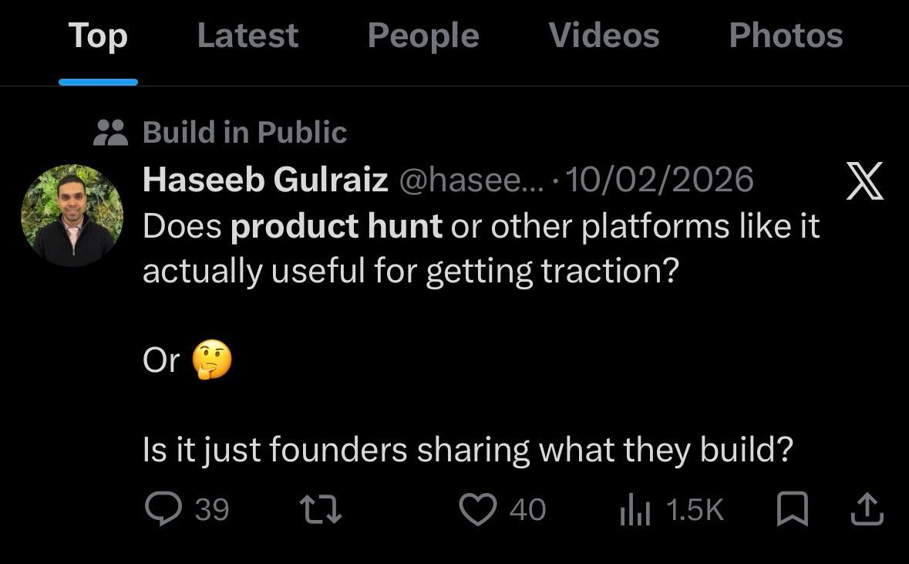
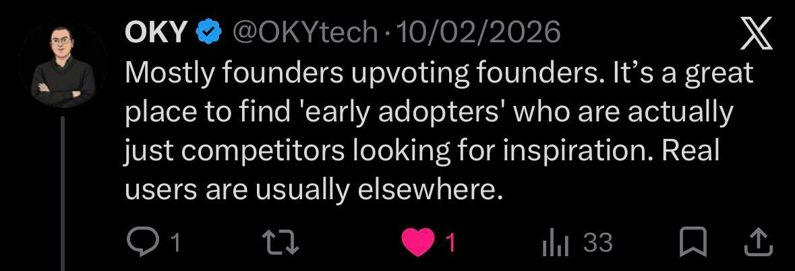
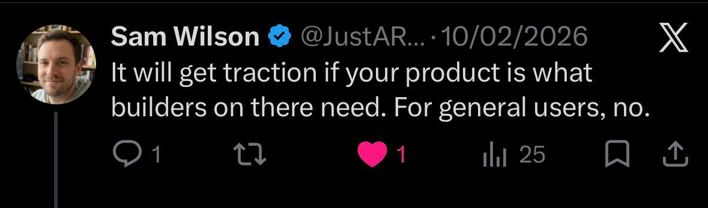
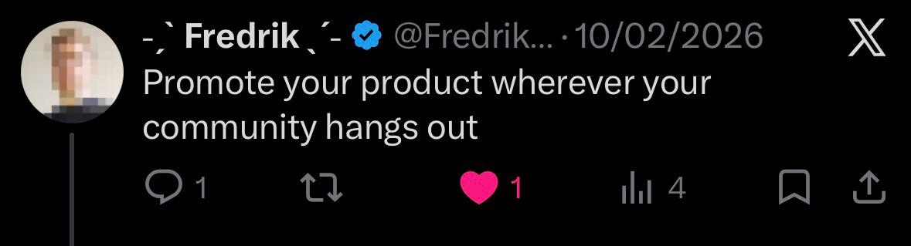
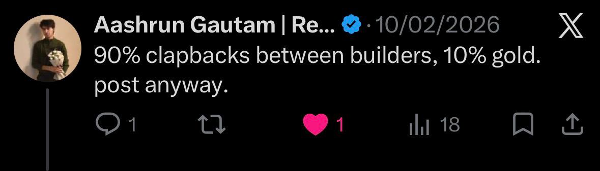

An AI-tool match engine — for users and founders, both sides of the table.





Out of thousands of profiles on the platform, your launch only surfaces to the ones it actually fits.
matched by profile · not by impression · not by SEO ranking.
Out of thousands of AI tools launched every day, Mesh narrows it to a few that actually fit you — in four taps.
household names filtered out · profile vector persists · refresh anywhere.
switching to the app →
Encode both sides into the same vector space, then retrieve by cosine.
same engine, both directions: users find tools · founders find users.
As input grows from concrete (role) to semantic (friction), hybrid alpha shifts toward vector.
4 taps · live narrowing · 6 picks that fit you, not the SEO winner.
Join interest-based threads · post, comment, vote · cross-post across multiple communities.
Mine · Explore · New. Save to your stack, mark as using, browse by category & label.
Curated launches that match your profile arrive in-app — no email spam, no sponsored noise.
URL · problem · ICP · pricing · target communities. Validation per step.
Human review · <24h SLA · approve / reject with reason. No auto-publish in production.
Approval posts to every target community · concierge nudge to top-5 matched users.
Matched · tell-me-more · skip · clicks by community & surface. Constitutionally anonymized.
Where launches find their people.
questions ↘